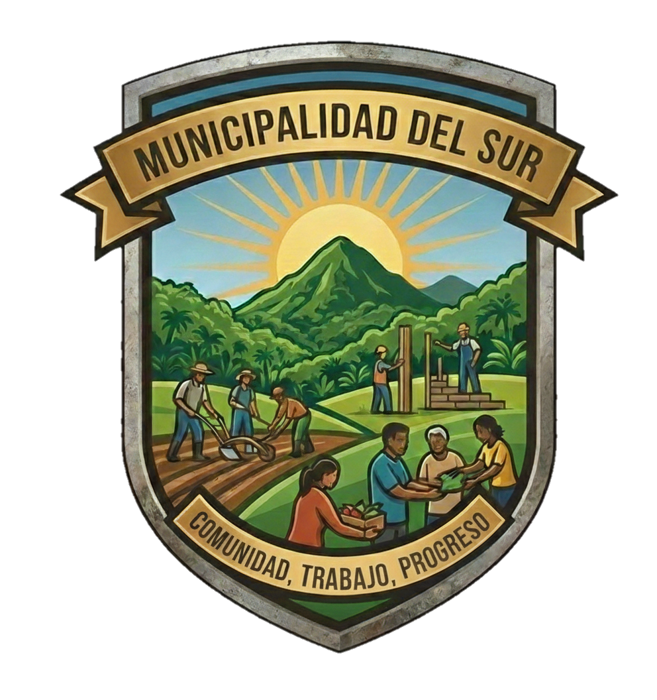

Ahorre tiempo realizando sus trámites desde la comodidad de su hogar u oficina. Nuestra plataforma digital le permite gestionar los siguientes servicios de forma segura:
Para la mayoría de los trámites digitales, usted necesitará:
¿Necesita ayuda técnica? Visite nuestra sección de Atencion Ciudadana.